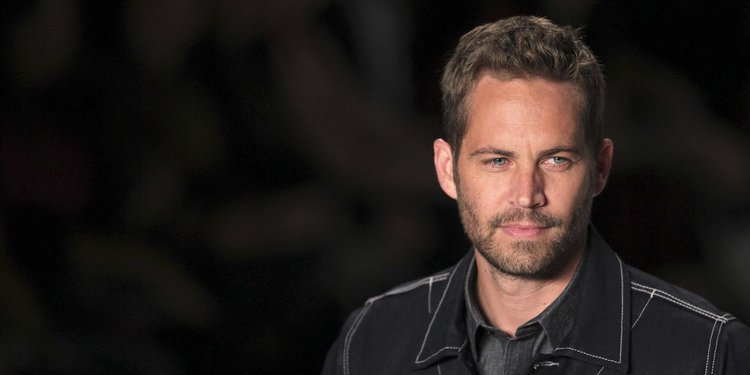
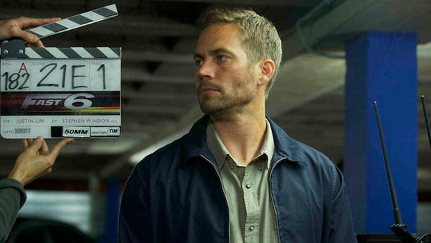

Paul Walker Kimdir?
Filmleri
Videolar
Görseller
Paul Walker Kimdir?

Amerikalý sinema oyuncusu
Eskiden modellik yapan aktör 2001 yapýmý The Fast and the Furious filminde canlandýrdýðý
polis memuru Brian O'Conner rolüyle üne kavuþtu.
Glendale’de büyüyen Walker, ilk önce Alfred Nobel Okulu‘na
ardýndan Foreman Lisesi‘ne devam etti.1991‘de mezun olmasýnýn
ardýndan deniz biyolojisi okudu.
Doðum tarihi: 12 Eylül 1973, Glendale, Kaliforniya, ABD
Ölüm tarihi ve yeri: 30 Kasým 2013, Valencia, Santa Clarita ,Kaliforniya, ABD
Boy: 1,88 m
Kardeþleri: Cody Walker, Caleb Walker, Ashlie Walker, Amie Walker
Çocuklar: Meadow Rain Walker
Üste Dön
Filmeleri

2019 I Am Paul Walker Himself (archive)
2015 Hýzlý ve Öfkeli 7 Brian O'Conner
2013 Hours Nolan
2013 Hýzlý ve Öfkeli 6 Brian O'Conner
2013 Yasak Bölge Damien Collier
2012 Air Racers 3D Himself
2012 Hýzlý ve Korkusuz Michael Woods
2011 Hýzlý ve Öfkeli 5: Rio Soygunu Brian O'Conner
2010 Takers John Rahway
2009 Hýzlý ve Öfkeli 4 Brian O'Conner
2006 Atalarýmýzýn Bayraklarý Hank Hansen
2006 Running Scared Joey Gazelle
2005 Kutup Macerasý Gerry Shepherd
2005 Maviliklere Doðru Jared Cole
2004 Yeni Yýl Mike
2003 Daha Hýzlý Daha Öfkeli Brian O'Conner
2003 Zaman Ötesi Chris Hughes
2001 Asla Yabancýlarla Oynama Lewis Thomas
2001 Hýzlý ve Öfkeli Brian O'Conner
2000 Saklý Seçilmiþler Caleb Mandrake
1999 Ýþte Böyle Bir Kýz Dean Sampson
1998 Varsity Blues Lance Harbor
1998 Yaþamýn Renkleri Skip Martin
1995 Touched by an Angel - Sezon2 Bölüm 24 Jonathan
1990 Patron Kim? - Sezon7 Bölüm 15 Michael Haynes
1986 Highway to Heaven - Sezon3 Bölüm 1-2 Todd Bryant
1985 Highway to Heaven - Sezon2 Bölüm 6 Eric Travers
Üste Dön
YouTube Videolarý
Bu viedo Paul Walker tamamlayamadýðý son filminden(Fast and Frious 7), kendisi için hazýrlanan veda kýsmýdýr. Viedoyu izlemek için
týklayýnýz.
Buda kendisi için hazýrlanan baþka bir þarký, ayný anda film müziði.Dinlemek için
týklayýnýz.
Yaþamýný yitirdikten sonra gündeme bomba gibi düþen haberlerden, izlemek için
týklayýnýz.
Üste Dön
Hayatýndan Bazý Kareler